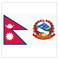

Nepal-SRM Relation
SRM Institute of Science and Technology (formerly known as SRM University) is committed to the socio economic development of Nepal by making available its rich and diverse suite of programmes in engineering, management, science and humanities, health and medicine and law, to name a few. SRM Institute of Science and Technology was one of the first Indian Universities to react to the aftermath of the natural calamity that struck the nation, by introducing the SRM Nepal Earthquake Scholarship . The special relationship continues with a slew of scholarships schemes on offer for the 2016 admission cycle. “SRM Institute of Science and Technology is committed to the triumvirate principles of higher education: access, equity and quality. Our doors are open to our neighbours. We have a special relationship with Nepal, and want to share in the growth story of the country by using education as an enabler of progress,” said Professor Prabir Bagchi, Vice Chancellor of SRM Institute of Science and Technology . There are more than 200 Nepalese students currently in SRM Institute of Science and Technology studying variuos courses of Engineering,Commerce,Medical and Hotel Management. Most of the nepalese students at SRM have come to study under the COMPEX scholarship scheme provided by Embassy of India,Kathmandu. Those students are offered a full time scholarship for the entire course stay. SRM has been a preferred destination for students from Nepal who are attracted by the wide choice of courses and the innovative and contemporary teaching-learning methods being practiced. SRM has always been mindful of its responsibility in meeting key challenges facing higher education in India: equity, access and quality. Students are shaped to meet the challenges of the work place in the 21st century through career development programmes that are integrated into the curriculum. Providing relief and support by way of scholarships is ingrained in the philosophy of SRM Institute of Science and Technology: every year over Rs 15 crore worth scholarship are awarded to students based on economic need, merit, disability and accomplishment in sports.